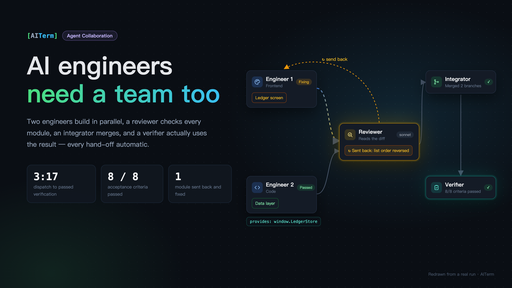
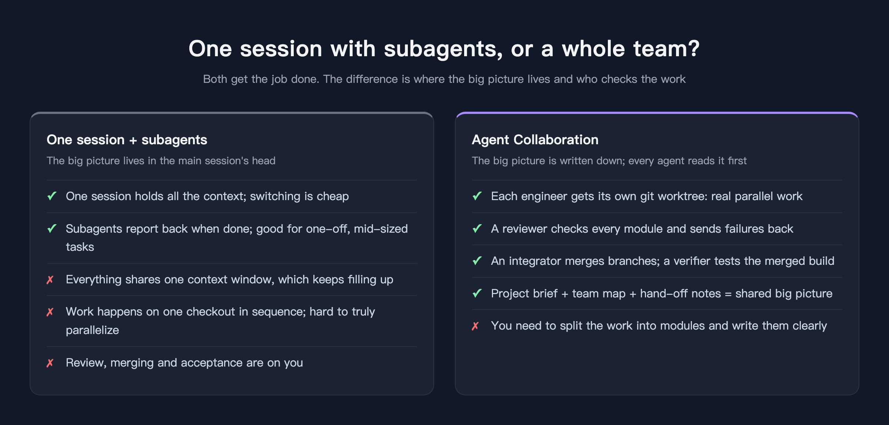
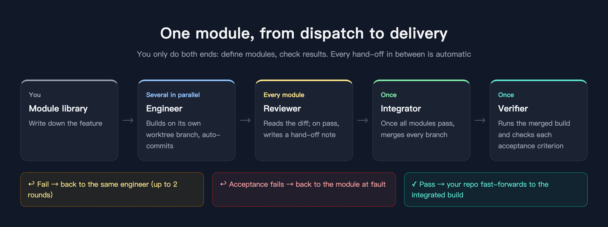
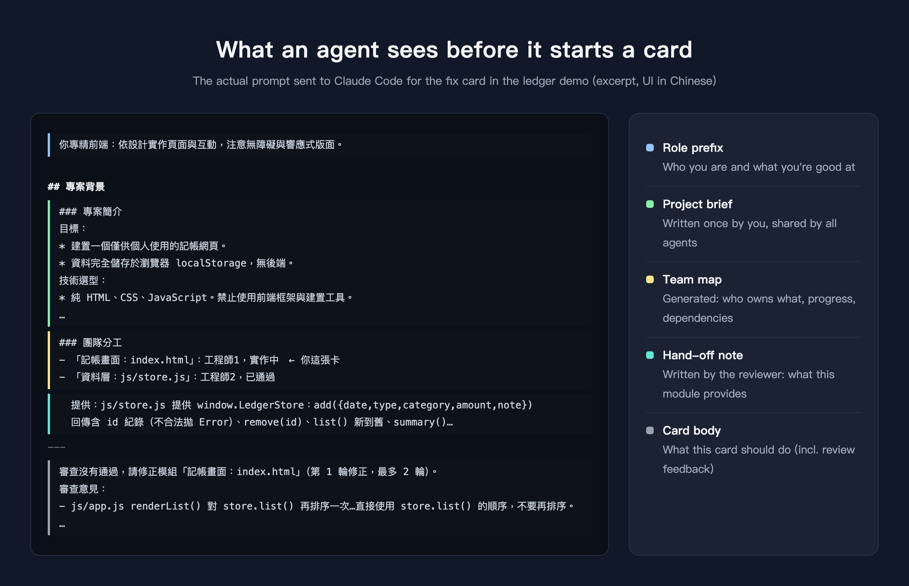

AI Engineers Need a Team Too
A single Claude Code session is powerful, but it is still one person doing the work. Here is how I got several AI engineers to split the work, review each other, merge, and verify the result — and a real run that went from dispatch to delivery in just over three minutes.

After enough time with Claude Code, I noticed that most of my effort wasn't going into writing requirements. It was going into being the human dispatcher.
Ask it to build A, check it, say "looks good." Ask it to build B — B depends on A, so remind it what A looks like. Open a new chat to get B reviewed. Paste the review feedback back. Merge everything myself. Open a browser and click around to make sure it actually works.
Every individual step, the AI did well. But every hand-off went through me.
Claude Code does have subagents, and they are useful. But the model is still "one main session with a few temporary helpers": the big picture lives in the main session's head, everything shares one context window, and work happens on one checkout in sequence. Once the task gets big, the context fills up; try to do two things at once and they step on each other.
So in AITerm, the terminal I build, I made something different: Agent Collaboration.

Organize the AI like a team
Agent Collaboration is a canvas. What you place on it are people, not tasks. There are four roles:
- Engineers write the code. You can have several. Each one gets its own git worktree and branch, so they never touch each other's files — real parallel work.
- The reviewer looks at every module when it's done. It reads the diff, never edits files, and decides pass or fail. A failure comes with reasons and goes straight back to the same engineer.
- The integrator merges all the engineers' branches once every module has passed.
- The verifier actually runs the merged build — for a web page, it opens a browser and uses it — checks each acceptance criterion one by one, and keeps screenshots as evidence.
The whole flow looks like this:

You only do the two ends: split the work into modules and describe them clearly, then look at the result. Who picks up next, when, and who gets a failure back is all automatic.
That's the theory. What does it actually look like? Below is the complete run I did this morning, building a small "ledger" web app from scratch. Every screenshot is the real screen at that moment. (The UI is shown in Chinese; AITerm also has an English UI.)
Hands-on: from an empty canvas to delivery
1. Put the team on the canvas
Drag a role from the top bar onto the canvas and a settings dialog opens: name, role, prompt, whether to use Claude Code or Codex, which model, and which repository to work in.
Roles can be loaded from a built-in list, each with a default prompt prefix. I made Engineer 1 a "frontend engineer" and left Engineer 2 as a general "code engineer."

Add a reviewer, an integrator and a verifier, and the team is complete. The connecting lines are drawn automatically to show how work will flow. The small card on the right is a getting-started tip telling you what to do next.

2. Write a project brief that everyone reads
I added this step later, and I now think it matters most.
A single session knows what the whole project is about. But on a team, every card is a fresh session. Give them nothing, and Engineer 1 won't know "no frameworks," Engineer 2 won't know "amounts are always integers," and what they build separately may not fit together.
So each project has a project brief. You write it once, and every agent reads it before starting work.
I typed a few casual sentences and hit "AI refine." It organized them into goals, tech choices, folder conventions, shared rules and out-of-scope items. "Undo" is there if you don't like it.

3. Write the work in the module library
The library on the left holds work that hasn't started yet. I wrote two modules:
- Data layer:
js/store.js, handles localStorage and exposesadd / remove / list / summary. - Ledger screen:
index.html— the form, the list, and this month's summary.
One thing is deliberate here: both modules start at the same time, so the screen's branch cannot see the data layer's code. I spelled out the interface on both sides and told the screen side not to create store.js itself. That's the price of parallel work — you have to define the boundaries first.

4. Dragging is dispatching
Drag "data layer" onto Engineer 2 and "ledger screen" onto Engineer 1, and work begins.
AITerm creates a worktree for each engineer, opens a tab, launches Claude Code and sends a prompt made of role + project context + card content. Each card shows which module it's on, how long it has been running and how many tokens it has used.
This is 09:51: Engineer 2's data layer is done and has passed review (green); Engineer 1 is still building the screen (blue).

5. The reviewer checks — and writes a hand-off note
A finished module is committed automatically and handed to the reviewer, which reads the diff in a separate worktree and judges it against the requirements.
On a pass, it also writes a sentence or two on what this module provides. That's the hand-off note. From then on, every card's team map shows a "provides: …" line under that module, so later engineers know how to use it without reading the code.
Here the reviewer is reviewing Engineer 1's screen (the flowing yellow line). Hovering over Engineer 2's module shows the reviewer's hand-off note.

6. Sent back on the first try
Then the reviewer sent Engineer 1's screen back.
The reason was specific: renderList() re-sorted the result of store.list() and assumed list() returned oldest-first. In fact list() is already newest-first, so sorting again reversed the order of entries on the same day — add two entries in a row and the newer one shows up below.
That kind of bug doesn't crash anything, and tests may not catch it, but a user notices right away. The reviewer caught it by reading both sides of the code.

A fix card went back to Engineer 1 automatically. This is what it saw before starting:

Look at the team map in the middle: Engineer 1 knows which module it owns, knows the data layer has passed, and can see directly what the data layer provides. The review feedback and the original requirement follow.
It fixed the issue in about ten seconds and committed again. The reviewer took another look and passed it.
7. Merge, then actually use it
With both modules passed, the integrator merged the two branches, and the verifier took over.
The verifier doesn't just read code. It opened the merged build in a browser and actually used it: added income and expenses, checked the list order, checked the monthly summary, entered invalid amounts, reloaded to see the data persist, deleted an entry, and shrank the window to phone width. Every check came with a screenshot.

The verification report: 8 acceptance criteria, 8 passed.

Once verification passed, AITerm fast-forwarded my original repository to the integrated build. index.html, css/, js/ and tests/ are all there, and opening it in a browser just works:

From the first module starting (09:50:04) to verification passing (09:53:21): 3 minutes 17 seconds, including one round of fixes. The whole run used about 1.37 million tokens.
Giving a group of agents a shared big picture
Looking back, what made this run go smoothly wasn't how strong the model is, but how much each agent knew before it started. A single session's big picture lives in its own context. A team's big picture has to be written down and handed to everyone.
In Agent Collaboration, that picture has three layers:
- Project brief — written once by you, shared by everyone: goals, tech choices, conventions, what's out of scope.
- Team map — generated automatically: who owns which module, how far along it is, what it depends on, and which one is yours.
- Hand-off notes — written by the reviewer on a pass. Not just "someone else finished," but "here's how to use what they built."
Together these are usually a thousand or two tokens. Next to the hundreds of thousands a card can use, that's around one percent more, and since it sits at the very start of the prompt, later turns benefit from prompt caching.
When to use which
I don't think Agent Collaboration replaces a single session. I use both every day:
- One task, clear scope, want to chat while it works: just open a Claude Code session. Fastest, lowest overhead.
- Work that splits into modules with interfaces between them, and needs someone checking it: use Agent Collaboration. You spend a few extra minutes defining the boundaries; you get real parallelism, a review for every module, a hands-on test of the merged build, and a verification report you can keep.
A few things this post didn't cover: when an agent needs you to decide something, it can stop and ask in a "decisions" inbox (or on Telegram); when a subscription runs out of usage, it waits and picks up again after you switch accounts; and if the app restarts, a half-finished card resumes the same conversation.
All of these come from the same idea: AI is already good at doing the work. What it was missing is a way to hand off work like a team.
AITerm is the cross-platform AI terminal I build. Agent Collaboration, the task board and automatic dispatch are all built in. It's open source under Apache 2.0 and runs on macOS, Windows and Linux.
🌐 Website: https://aiterm.win/ 💻 Source & downloads: https://github.com/jamesju9999/AITERM
If this was useful, a clap would mean a lot (you can clap up to 50 times), and follow me for more hands-on posts about AI-assisted development.